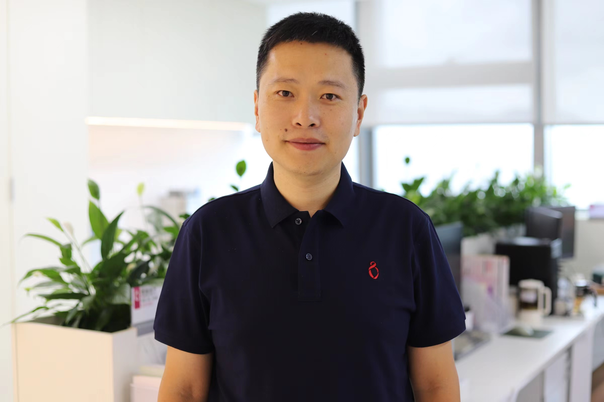

|  | Ruihua DONG 董瑞华 |
Editor and Reviews:
2025:
[37] Haifei Wen#, Ziwei Deng, Ruihua Dong#, Zicong Zhang, Ximing Chen, Gian Albert Alfani, Wenjin Wang, Zijie Qiu, Parvej Alam*, Zheng Zhao*, Ben Zhong Tang*, "Sulfur-π Interaction: A New Strategy for Designing NIR-II AIE Photosensitizers for Wound Healing", Adv. Funct. Mater. 2025, 2508015. (IF=18.5)
[36] Shuai Yuan, Peng Zhang, Feng Zhang, Shiqiang Yan, Ruihua Dong, Chengjun Wu, Jiu Deng*, "Profiling signaling mediators for cell-cell interactions and communications with microfluidics-based single-cell analysis tools", iScience. 2025, 28, 111663. (IF=4.6)
[35] Mian Chen#, Ruihua Dong#, Jiayi Song, Jie Qi, Jiangjiang Zhang, Zheng Zhao*, Wentian Zhang, Ying Li*, Ben Zhong Tang*, "Fast and stable antibacterial coating of photosensitive aggregation-induced emission luminogens for disinfection on medical devices", Adv. Healthc. Mater. 2024, 13, 2303967. (IF=10.0)
[34] Ruihua Dong, Lulu Wang, Zebin Li, Jincheng Jiao, Yan Wu, Zhuowei Feng, Xufang Wang, Minglong Chen, Chang Cui, Yi Lu, Xingyu Jiang*, "Stretchable, self-rolled, microfluidic electronics enable conformable neural interfaces of brain and vagus neuromodulation", ACS Nano 2024, 18, 1702. (IF=17.1)
[33] Ruihua Dong, Mian Chen, Yuexiao Jia, Hao Tang, Ziyin Xiong, Yunze Long*, Xingyu Jiang*, “An in situ dressing material containing a multi-armed antibiotic for healing irregular wounds”, Aggregate 2024, e493. (IF=18.8)
[32] Jinhui Jiang, Fulong Ma, Ruihua Dong, Siwei Zhang, Zicong Zhang, Haozhe Tan, Xumin Cai, Zijie Qiu, Yu Xiong*, Wei Han*, Zheng Zhao*, Ben Zhong Tang*, J. Am. Chem. Soc. 2023, 145, 27282. (IF=15.0)
[31] Yan Wu, Jinhao Cheng, Jie Qi, Chen Hang, Ruihua Dong, Boon Chuan Low, Hanry Yu, Xingyu Jiang* Nat. Commun. 2024, 15, 4047. (16.6)
[30] Yuexiao Jia, Wenwen Chen, Rongbing Tang, Jiangjiang Zhang, Xiaoyan Liu, Ruihua Dong, Fupin Hu and Xingyu Jiang*, Cell Host & Microbe 2023, 31, 1101. (IF=30.3)
Prior to UHRS:
[29] Ruihua Dong, Ying Li, Mian Chen, Peihong Xiao, Kun Zhou, Zheng Zhao*, Benzhong Tang*, "In situ electrospinning of aggregation-induced emission nanofibrous dressing for wound healing", Small Methods 2022, 2101247. (IF=15.367, Quote:36, Highly Cited Paper)
[28] Dou Wang#, Ruihua Dong#, Xuedong Wang, Xingyu Jiang*, "Flexible electronic catheter for capture and elimination of circulating tumor cells", ACS Nano 2022, 16(4), 5274. (IF=18.027, Quote:10)
[27] Ruihua Dong, Lulu Wang, Chen Hang, Zhen Chen, Xiaoyan Liu, Leni Zhong, Jie Qi, Yuqing Huang, Shaoqin Liu*, Liping Wang*, Yi Lu*, Xingyu Jiang*, "Printed stretchable liquid metal electrode arrays for in vivo neural recording", Small 2021, 17, 2006612. (IF=15.153, Quote:36, Top Downloaded Article)
[26] Ruihua Dong, Xiaoyan Liu, Shiyu Cheng, Lixue Tang, Mian Chen, Leni Zhong, Zhen Chen, Shaoqin Liu*, Xingyu Jiang*, "Highly stretchable metal-polymer conductor electrode array for electrophysiology", Adv. Healthc. Mater. 2020, 10, 2000641. (IF=11.092, Quote:16)
[25] Ruihua Dong, Yong Liu, Lei Mou, Jinqi Deng, Xingyu Jiang*, "Microfluidics-based biomaterials and biodevices", Adv. Mater. 2019, 31, 1805033. (IF=32.086, Quote:99)
[24] Ruihua Dong, Yuexiao Jia, Chongchong Qin, Lu Zhan, Xu Yan, Lin Cui, Yu Zhou, Xingyu Jiang and Yunze Long*, "In situ deposition of a personalized nanofibrous dressing via a handy electrospinning device for skin wound care", Nanoscale 2016, 8, 3482. (IF=8.037, Quote:160)
[23] Ruihua Dong, Chongchong Qin, Xuan Qiu, Xu Yan, Miao Yu, Lin Cui, Yu Zhou, Hongdi Zhang, Xingyu Jiang, Yunze Long*, "In situ precision electrospinning as an effective delivery technique for cyanoacrylate medical glue with high efficiency and low toxicity", Nanoscale 2015, 7, 19648. (IF=8.037, Quote:50)
[22] Fuyan Lv#, Ruihua Dong#, Zhaojian Li, Chongchong Qin, Xu Yan, Xiaoxiao He, Yu Zhou, Shiying Yan, Yunze Long*, "In situ precise electrospinning of medical glue fibers as nonsuture dural repair with high sealing capability and flexibility", Int. J. Nanomedicine 2016, 11, 4213. (IF=7.033, Quote:20)
[21] Miao Yu#, Ruihua Dong#, Xu Yan, Guifeng Yu, Minghao You, Xin Ning, Yunze Long*, "Recent advances in needleless electrospinning of ultrathin fibers: from academia to industrial production", Macromol. Mater. Eng. 2017, 302, 1700002. (IF=4.402, Quote:121)
[20] Yifan Wu, Jiangao Li, Zipeng Shen, Deliang Wang, Ruihua Dong, Jiangjiang Zhang, Yinzhen Pan, Ying Li, Dong Wang, Ben Zhong Tang*, Angewandte Chemie 2022, 134, e202212386. (IF=16.823)
[19] Yuexiao Jia, Jiangjiang Zhang, Yingcan Zhao, Ruihua Dong, Hui Wang, and Xingyu Jiang*, Chem. Commun. 2022, 58, 10544. (IF=6.065)
[18] Li Ding, Chen Hang, Shuaijian Yang, Jie Qi, Ruihua Dong, Yan Zhang, Hansong Sun, and Xingyu Jiang*, Nano Letters 2022, 22, 4482. (IF=12.262)
[17] Mian Chen, Jiangjiang Zhang, Jie Qi, Ruihua Dong, Hongmei Liu, Decheng Wu, Huawu Shao, and Xingyu Jiang*, ACS Nano 2022, 16, 7732. (IF=18.027)
[16] Shuting Cheng, Mian Chen, Kun Wang, Qingqing Liu, Yi Cheng, Ruihua Dong, Kewen Huang, Hao Yuan, Jun Jiang, Wenjuan Li, Junliang Li, Ce Tu, Jian Liu, Xingyu Jiang*, Yue Qi*, and Zhongfan Liu*, J. Mater. Chem. A 2022, 10, 12125. (IF=14.511)
[15] Chen Hang, Li Ding, Shiyu Cheng, Ruihua Dong, Jie Qi, Xiaoyan Liu, Qian Liu, Yan Zhang and Xingyu Jiang*, Adv. Mater. 2021, 2101447. (IF=32.086)
[14] Mian Chen, Ruihua Dong, Jiangjiang Zhang, Hao Tang, Qizhen Li, Huawu Shao and Xingyu Jiang*, ACS Appl. Mater. Interfaces 2021, 10, 29398. (IF=10.383)
[13] Lei Mou, Jie Qi, Lixue Tang, Ruihua Dong, Yuan Gao* and Xingyu Jiang*, Small 2020, 16, 2005336. (IF=15.153)
[12] Shiyu Cheng, Chen Hang, Li Ding, Liujun Jia, Lixue Tang, Lei Mou, Jie Qi, Ruihua Dong, Wenfu Zheng, Yan Zhang, Xingyu Jiang*, Matter 2020, 3, 1664. (IF=19.967)
[11] Xiaohui Zhao, Yuexiao Jia, Ruihua Dong, Jinqi Deng, Hao Tang, Fupin Hu, Shaoqin Liu, Xingyu Jiang*, Chem. Commun. 2020, 56, 10918. (IF=6.065)
[10] Mian Chen, Zhou Long, Ruihua Dong, Le Wang, Jiangjiang Zhang, Sixiang Li, Xiaohui Zhao, Xiandeng Hou, Huawu Shao, Xingyu Jiang*, Small 2020, 16, 1906240. (IF=15.153)
[9] Lei Mou, Ruihua Dong, Binfeng Hu, Zulan Li, JiangJiang Zhang, Xingyu Jiang*, Lab Chip 2019, 19, 2750. (IF=7.517)
[8] Jun Li, Chunlin Sun, Pengrong An, Xiaoyan Liu, Ruihua Dong, Jinghong Sun, Xingyu Zhang, Yanbo Xie, Chuanguang Qin, Wenfu Zheng, Haoli Zhang, Xingyu Jiang*, J. Am. Chem. Soc. 2019, 141, 8816. (IF=16.383)
[7] Xiaohui Zhao, Yuexiao Jia, Juanjuan Li, Ruihua Dong, Jiangjiang Zhang, Xingyu Jiang*, ACS Appl. Mater. Interfaces 2018, 10, 29398. (IF=10.383)
[6] Shicong Xu, Chongchong Qin, Miao Yu, Ruihua Dong, Xu Yan, Hui Zhao, Wenpeng Han, Hongdi Zhang and Yunze Long*, Nanoscale 2015, 7, 12351. (IF=8.307)
[5] Xu Yan, Miao Yu, Lihua Zhang, Xiansheng Jia, Jintao Li, Xiaopeng Duan, Chongchong Qin, Ruihua Dong and Yunze Long*, Nanoscale 2016, 8, 209. (IF=8.307)
[4] Hongwei He, Bin Zhang, Xu Yan, Ruihua Dong, Xiansheng Jia, Guifeng Yu, Xin Ning, Linhua Xia and Yunze Long*, RSC Adv. 2016, 6, 106945. (IF=4.036)
[3] Chongchong Qin, Xiaopeng Duan, Le Wang, Lihua Zhang, Miao Yu, Ruihua Dong, Xu Yan, Hongwei He and Yunze Long*, Nanoscale 2015, 7, 16611. (IF=8.307)
[2] Xu Yan, Miao Yu, Wenpeng Han, Minghao You, Juncheng Zhang, Ruihua Dong, Hongdi Zhang and Yunze Long*, Chin. Phys. B 2016, 25, 7, 078106. (IF=1.652)
[1] Hongwei He, Le Wang, Xu Yan, Lihua Zhang, Miao Yu, Guifeng Yu, Ruihua Dong, Linhua Xia, Seeram Ramakrishna* and Yunze Long*, RSC Adv. 2016, 6, 29423. (IF=4.036)
Issued China patent:
[1] 一种磁纺装置及使用该装置制备微纳米纤维的方法，龙云泽，董瑞华，李金涛，贾宪生，闫旭，于桂凤，魏代善，管殿柱，授权发明专利，CN104878456B，20170222.
[2] 一种熔体磁纺丝装置及利用该装置制备微纳米纤维的方法，龙云泽，董瑞华，闫旭，段晓鹏，犹明浩，王乐，张丽华，魏代善，管殿柱，授权发明专利，CN104878455B，20170315.
[3] 一种大规模磁纺设备及用该设备制备微纳米纤维的方法，龙云泽，董瑞华，闫旭，李金涛，魏代善，于桂凤，贺晓晓，犹明浩，管殿柱，授权发明专利，CN104878461B，20170503.
[4] 一种纳米纤维抗菌敷料原位制备方法，于淼，董瑞华，龙云泽，闫旭，于桂凤，韩文鹏，张红娣，授权发明专利，CN104667338B，20170808.
[5] 一种便携式静电纺丝设备及其使用方法，于淼，龙云泽，董瑞华，闫旭，秦崇崇，韩文鹏，授权发明专利，CN104790049B，20160907.
[6] 一种微波加热熔体静电纺丝装置，龙云泽，黄渊源，董瑞华，闫旭，韩文鹏，张君诚，段晓鹏，秦崇崇，林大鹏，授权发明专利，CN104131358B，20170609.
[7] 一种磁纺制备导电聚合物微纳米纤维的方法，龙云泽，于桂凤，董瑞华，闫旭，李金涛，贾宪生，贺晓晓，魏代善，管殿柱，授权发明专利，CN104911719B，20170707.
[8] 一种磁纺制备石墨烯/聚合物有序微纳米复合纤维的方法，韩文鹏，龙云泽，董瑞华，闫旭，贾宪生，李金涛，赵惠，贺晓晓，魏代善，管殿柱，授权发明专利，CN104862799B，20170118.
[9] 一种大规模制备微纳米纤维的静电纺丝装置，于淼，龙云泽，董瑞华，秦崇崇，授权发明专利，CN105970313B，20180824.
[10] 一种利用气压恒定供液的静电纺丝装置，于淼，龙云泽，董瑞华，秦崇崇，授权发明专利，CN105951190B，20180824.
[11] 一种气流辅助线性齿电极静电纺丝装置，于淼，龙云泽，董瑞华，秦崇崇，授权发明专利，CN105970314，20180824.
[12] 一种消除PM2.5颗粒物的静电喷雾路灯装置，于淼，闫旭，龙云泽，董瑞华，盛琛皓，韩文鹏，授权发明专利，CN104776384B，20170412.
[13] 一种消除汽车尾气中PM2.5颗粒物的装置及其使用方法，于淼，闫旭，龙云泽，董瑞华，盛琛皓，韩文鹏，授权发明专利，CN104912627B，20180511.
[14] 一种低温原位静电纺丝装置，龙云泽，闫旭，韩文鹏，秦崇崇，董瑞华，张红娣，张君诚，于经学，林大鹏，盛琛皓，授权发明专利，CN104313707B，20160824.
[15] 一种交叉纳米纤维P-N异质结阵列的制备方法，龙云泽，陈帅，盛琛皓，韩文鹏，董瑞华，张红娣，授权发明专利，CN103943778B，20160817.
[16] 一种静电喷雾消除可入肺颗粒物的方法，龙云泽，闫旭，韩文鹏，秦崇崇，董瑞华，张红娣，张君诚，林大鹏，盛琛皓，赵惠，张保生，授权发明专利，CN104259002B，20161012.
[17] 一种无溶剂静电纺丝制备聚氨酯微纳米纤维的方法，龙云泽，何宏伟，林大鹏，闫旭，韩文鹏，王乐，张丽华，董瑞华，授权发明专利，CN104532367B，20160824.
[18] 一种规模化无溶剂电纺制备光固化材料微纳米纤维的方法，龙云泽，何宏伟，张丽华，王乐，段晓鹏，董瑞华，秦崇崇，赵惠，夏临华，授权发明专利，CN105220244A，20160106.
[19] 一种基于UV固化的无溶剂静电纺丝装置，龙云泽，何宏伟，王乐，张丽华，段晓鹏，董瑞华，秦崇崇，赵惠，夏临华，授权发明专利，CN105088367B，20171222.
[20] 一种力敏可拉伸电纺图案化导电纳米纤维膜及其制备方法，龙云泽，于桂凤，闫旭，贺晓晓，韩文鹏，董瑞华，贾宪生，李金涛，犹明浩，授权发明专利，CN104894750B，20170503.
[21] 一种电容式超薄柔性应力传感器及其制备方法，闫旭，龙云泽，于桂凤，贺晓晓，王乐，董瑞华，贾宪生，李金涛，授权发明专利，CN104897316B，20170926.
[22] 一种氯化钴湿敏电纺微纳米纤维膜及其制备方法和应用，闫旭，龙云泽，犹明浩，于桂凤，贺晓晓，贾宪生，董瑞华，张红娣，授权发明专利，CN105568557B，20190118.
[23] 颅内伤口愈合监测装置、其制备方法及应用，蒋兴宇，董瑞华，奚磊，秦伟，授权发明专利，CN109222905A，20190118.
[24] 一种负载AIE荧光纳米纤维敷料制备方法与应用，蒋兴宇，董瑞华，授权发明专利，CN110787316A，20200214.
Substantive examination:
[25] 一种壳聚糖纳米纤维及其规模化电纺制备方法和应用，于淼，龙云泽，董瑞华，闫旭，发明专利申请，CN106693030A，20170524
[26]一种海藻酸钠纳米纤维及其规模化电纺制备方法和应用，于淼，龙云泽，董瑞华，闫旭，发明专利申请，CN106480517A，20170308.
[27] 一种柔性可拉伸神经电极及其制备方法和应用，蒋兴宇，董瑞华，刘晓艳，唐立雪，发明专利申请，CN110251125A，20190920.
[28] 一种液态金属微电极阵列及其制备方法，蒋兴宇，董瑞华，发明专利申请，CN111920404A，20201113.
[29] 一种软硬可调的植入式神经电极及其制备方法，蒋兴宇，董瑞华，发明专利申请，CN202011414621.6，20200703
[30] 一种液态金属光遗传神经电极及其制备方法，蒋兴宇，董瑞华，发明专利申请，CN113476749A，20210115
[31] 一种自卷曲液态金属外周神经电极及其制备方法，蒋兴宇，董瑞华，李泽彬，发明专利申请，20220321.
[32] 一种液态金属微丝神经电极及其制备方法，蒋兴宇，董瑞华，文天昀，发明专利申请，20220322.